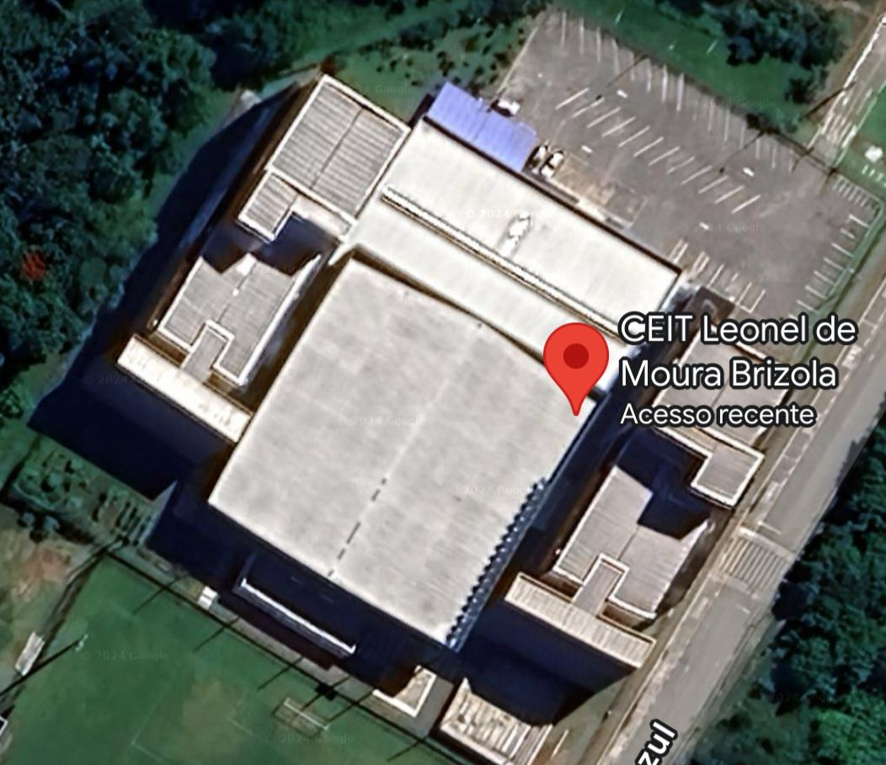
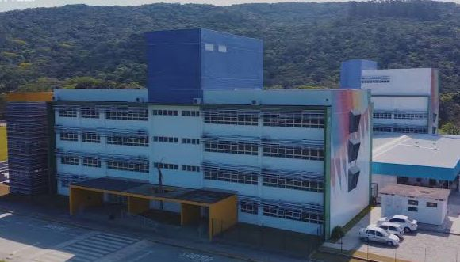
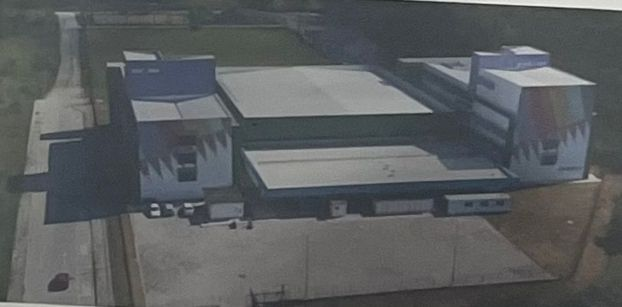

Introdução
O Projeto Maquete do Centro de Educação Integral e Tecnológica Leonel de Moura Brizola (CEIT) foi uma iniciativa interdisciplinar que envolveu a participação de professores coordenadores de projetos de oficinas (Oficina de Cartografia e Oficina de Robótica Sustentável) e docentes das disciplinas de Geografia, Matemática e Arte, atuantes na escola - instituição que compõe a Rede Pública Municipal de Ensino de Bombinhas/SC.
Objetivos
O principal objetivo do projeto foi a construção de uma maquete da escola, explorando conceitos relacionados a representações visuais da superfície terrestre e de seus elementos naturais e culturais, produtos cartográficos, escala geográfica, escala cartográfica, ligações elétricas e energias renováveis, com ênfase na energia solar, além de possibilitar o exercício de cálculos matemáticos. Objetivou-se, também, promover melhorias nos processos de ensino e aprendizagem e fortalecer as práticas educativas com viés de inovação.
Metodologia
A proposta, que ensejou-se na dinâmica dos trabalhos desenvolvidos na Oficina de Cartografia e de Robótica Sustentável, teve como fio condutor o desejo de impulsionar ações conjuntas de professores de diferentes projetos e componentes curriculares, além de estudantes de turmas de sexto ano do Ensino Fundamental.
O projeto ocorreu no segundo trimestre e envolveu discussoes de conceitos, noções e conhecimentos cartográficos, em articulação com os temas abordados nas aulas de Geografia, assim como conceitos, noções e conhecimentos que articulam-se com a Matemática e com a Robótica Sustentável, além da elaboração conjunta da maquete. Entre as atividades propostas estão: Mobilização para os saberes cartográficos, geográficos, matemáticos e de robótica e sustentabilidade; Caminhada pela escola para mapeamento visual; Elaboração de mapas feitos à mão; Medições guiadas dos espaços da escola; Elaboração da planta baixa da escola; Representação da escola por meio da maquete.
Nesta etapa final, os estudantes reuniram-se no Espaço Maker da escola para construir a maquete, utilizando materiais reutilizáveis, como papelão, integrando ligações elétricas para acender LEDs com o uso de minis painéis solares. Além disso, foram adicionados objetos impressos em 3D, aprimorando a estrutura da maquete e enriquecendo seu nível de detalhamento.
Imagem 1: Vista aérea da escola Fonte: Google Maps
Imagem 2: Vista aérea da escola Fonte: Google Imagens
Imagem 3: Vista aérea da escola Fonte: Google Imagens
Considerações Finais
O desenvolvimento do projeto proporcionou uma experiência rica e interdisciplinar entre os docentes e estudantes, integrando conceitos de cartografia, geografia, matemática, robótica e sustentabilidade de forma prática e colaborativa. O projeto permitiu o aprofundamento dos conteúdos abordados nas disciplinas e oficinas envolvidas e também incentivou a aplicação de novas tecnologias e o desenvolvimento de soluções sustentáveis.
Referências
MANFIO, Vanessa. O estudo da escala cartográfica por meio da construção de maquetes: Práticas didáticas desenvolvidas em uma escola municipal de ensino fundamental. Estrabão, [S. I.], v. 4, n. 1, p. 303-311, 2023. DOI: 10.53455/re.v4i.86. Disponível em:https://revista.estrabao.press/index.php/estrabao/article/view/86. Acesso em: 3 jul. 2024.